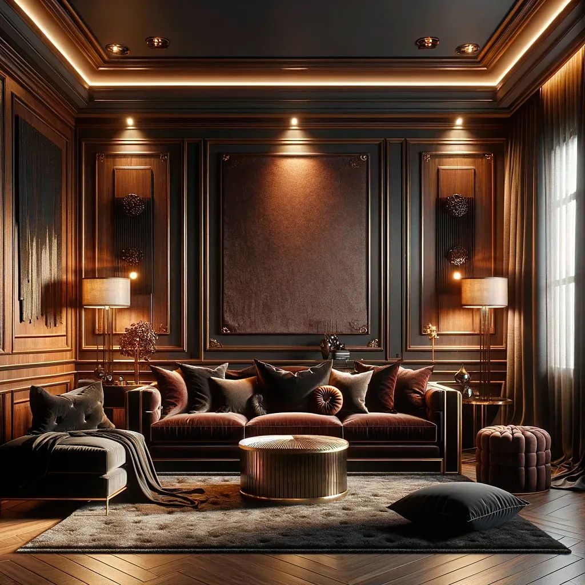

<section class="collections" id="products">
  <div class="collections__total-wrapper">
    <div class="collections__wrapper">
      <section class="collections__text">
        <header class="collections__block-header">
          <h2 class="collections__title">\ COLLECTIONS \</h2>
          <p class="collections__header">Lighting Solutions</p>
          <p class="collections__header-text">
            Materials & processes we use to make our lighting collections.
          </p>
          <p class="collections__description">
            At Prizma Studio, we take pride in crafting our own lightning items
            using only the finest materials, ensuring both quality and
            aesthetics are never compromised. Our dedication to excellence is
            evident in the meticulous selection of materials, including:
          </p>
        </header>
        <section class="collections__list">
          <div class="collections__item">
            <div class="collections__item-image">
              
            </div>
            <div class="collections__item-content">
              <p class="list__header">Silk Printing</p>
              <p class="list__description">
                Harnessing the elegance and versatility of silk printing, we
                adorn our lighting fixtures with intricate patterns and designs
                that elevate their visual appeal.
              </p>
            </div>
          </div>
          <div class="collections__item">
            <div class="collections__item-image">
              
            </div>
            <div class="collections__item-content">
              <p class="list__header">Polymeric Material</p>
              <p class="list__description">
                With an eye for innovation, our designers utilize versatile
                polymeric materials to bring our lighting designs to life with
                modern flair and durability.
              </p>
            </div>
          </div>
          <div class="collections__item">
            <div class="collections__item-image">
              
            </div>
            <div class="collections__item-content">
              <p class="list__header">Forged Metal</p>
              <p class="list__description">
                For timeless elegance and enduring strength, we turn to forged
                metal in crafting our lighting masterpieces. Each piece is
                meticulously handcrafted by skilled artisans.
              </p>
            </div>
          </div>
        </section>
      </section>
    </div>
    <div class="collections__background">
      
    </div>
  </div>
</section>
